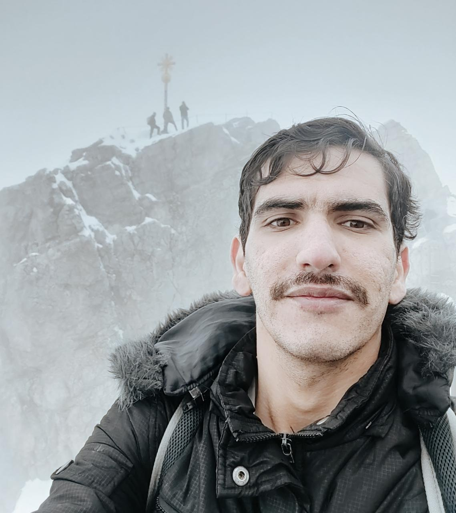

Résumé
|  | Hi, my name is Yasin Yousif and currently I'm doing my PhD in Multi-agent Modelling for traffic. Previouslly I studied Robotics, and Mechatronics |
Education
-
2020-2024 : PhD candidate in Informatics, TU Clausthal.
- Member of Social Cars RTG,
- PhD subject is about Modelling mixed Traffic in Shared Spaces using Machine Learning and Multi-agents system approaches
-
2016-2019 : Tishreen University, Lattakia.
- Grade: 83%.
- First year courses: Programming Logic Control (Siemens PLC) , Machine Vision, Optimal control, Electrical Drives, and others.
-
2010-2015 : B.S. in Mechatronics, Al-Baath University, Homs.
- Grade: 82%.
- Bachelor’s Degree in Mechatronics Engineering,
- Graduation project: 3D-reconstruction from images
Master Thesis
-
Title: 3D reconstruction from 2D images using EKF-SLAM
-
Description: In this research, an effort is made to make use of the covariance information given by the Visual SLAM method (Simultaneous Localization and Mapping using Visual Sensors)
Work Experience & Practical Computer Skills
2017–2020 Research Assistant, Courses Taught in:
- Computer networks
- Image processing
- Artificial Intelligence
Practical Computer Skills
- Programming Langauges: Python, Matlab, C++, Javascript.
- Applications: Blender, Inkscape, Simatic Step 7 PLC software and Vim
- Software Libraries: Robotics Operating Sysytem, pytorch, Latex, MySQL, OpenCV, Jupyter Notebook, Linux.
Langauges
- English (C1: Fluent)
- German (B2)
- Arabic (Native)
- French (Beginner)
- Mandarin (Beginner)
Publications & Projects
-
Yousif, Y., & Müller, J. (2024). Efficient and Interpretable Traffic Destination Prediction using Explainable Boosting Machines. arXiv preprint arXiv:2402.03457. paper
-
Mukbil, A., Yousif, Y., Hossain, S., & Müller, J. P. (2023, September). CTV-Dataset: A Shared Space Drone Dataset for Cyclist-Road User Interaction Derived from Campus Experiments. In 2023 IEEE 26th International Conference on Intelligent Transportation Systems (ITSC) (pp. 3186-3191). IEEE.
-
Yousif, Y. M., Mukbil, A., & Müller, J. P. (2022). OfflineMOT: A Python package for multiple objects detection and tracking from bird view stationary drone videos. Journal of Open Source Software, 7(74), 4099. paper
-
Yousif, Y. M., & Müller, J. P. Generating Explanatory Saliency Maps for Mixed Traffic Flow using a Behaviour Cloning Model. paper
-
Yousif, Y. M., & Hatem, I. (2021). Video Frames Selection Method for 3D Reconstruction Depending on ROS-Based Monocular SLAM. In Robot Operating System (ROS) (pp. 351-380). Springer, Cham.